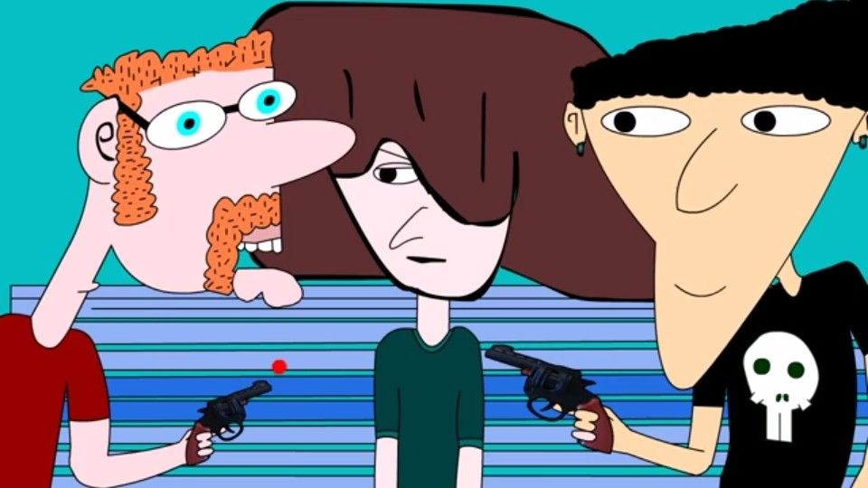
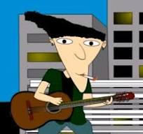
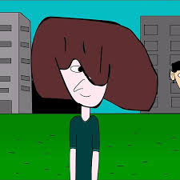
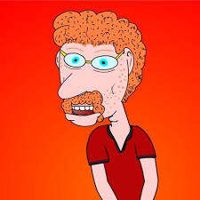
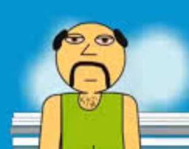
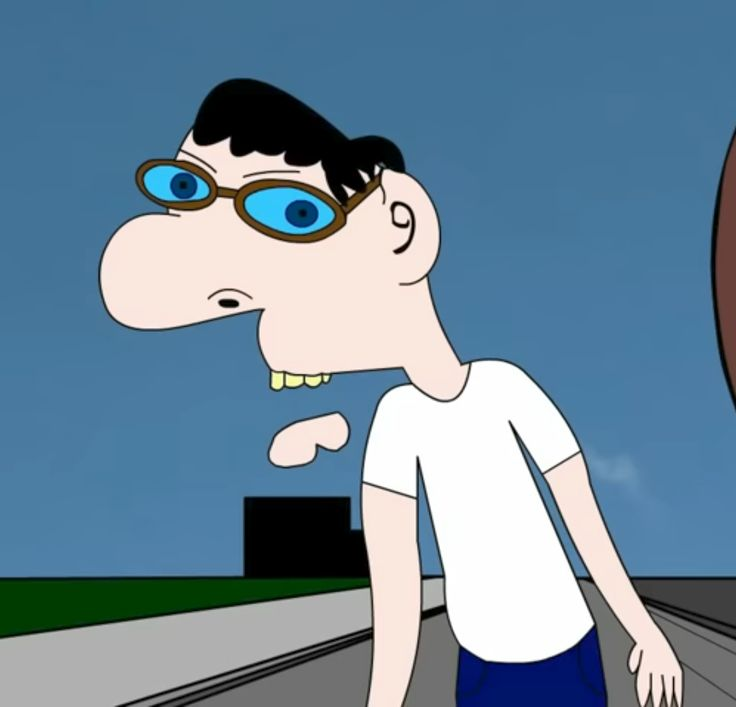
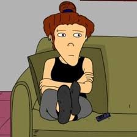
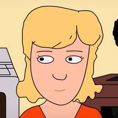
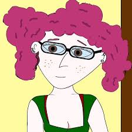

×
Los Tres Acordes

Información de la Serie
La serie tres acordes es una serie de animación argentina creada escrita y animada por el artista rosarino Dante Farías, conocido como "Taxideral", y producida por su canal de YouTube "Producciones Trukini". La serie se caracteriza por su humor ácido y sus diálogos filosóficos y existencialistas la serie sigue las desventuras de tres amigos rosarinos, Jaique, Adriel y Eduard. A lo largo de las temporadas, se les ve evolucionar desde su niñez hasta su vida adulta en sus veintitantos, enfrentando situaciones absurdas que a menudo se entrelazan con temas profundos como la vida, la muerte, la religión, la ciencia y las drogas
Información de los Personajes Principales
Jaique

es probablemente, el más errático de los tres amigos. Vive en una especie de espiral de trabajos malogrados, decisiones impulsivas y sueños truncados. Desde joven mostró poco interés por la escuela, y abandonó el secundario para dedicarse a la música, convencido de que ese era su destino. Sin embargo, sus bandas se disolvieron tan rápido como aparecieron, y lo mismo ocurrió con los oficios que consiguió: mozo, animador de fiestas infantiles, vendedor de colchones, empleado de limpieza. Su vida es un ir y venir de intentos fallidos, pero esa misma inestabilidad lo vuelve entrañable y real. Pese a todo, Jaique tiene inquietudes intelectuales profundas: le interesa la filosofía, la física, la psicología y hasta las matemáticas. Esa contradicción entre el “vago simpático” y el pensador existencialista es lo que lo define
Eduard

Eduard es el más reflexivo del grupo, el que aporta calma en medio del caos. Siempre aparece como la voz de la razón, aunque muchas veces su prudencia no logra frenar los desastres de Jaique y Adriel. Tiene una vena poética, un aire melancólico y cierta inclinación a la introspección. Su evolución a lo largo de la serie se nota incluso en lo físico: primero con su cabello largo, después con barba y, finalmente, con un aspecto más adulto y sobrio.
A diferencia de Jaique, Eduard no huye de la intelectualidad, la abraza. Habla de filosofía, escribe, reflexiona sobre la vida. Aunque suele ser el menos llamativo en cuanto a acciones disparatadas, es quizás el más profundo: el que carga con pensamientos existenciales y el que sufre en silencio mientras todo alrededor cambia.
Adriel

Adriel es el más temperamental, visceral y explosivo del trío. A menudo irritable, efusivo y algo descolocado, su carácter lo empuja a vivir al borde del colapso emocional. Es el que más se sumerge en crisis existenciales y cuestionamientos intensos, y eso lo hace tanto un personaje entrañable como impredecible. Con el tiempo, su inestabilidad mental se va acentuando, lo que lo convierte en un reflejo de la dificultad de adaptarse a los cambios de la vida adulta.
Adriel también representa la pasión por el arte y la música: en algún momento se dedica a la música electrónica, canalizando allí parte de su energía desbordante. Es, de alguna manera, el corazón caótico del grupo: donde Jaique aporta el descontrol despreocupado y Eduard la calma reflexiva, Adriel pone la intensidad pura, la emoción cruda y la vulnerabilidad sin filtro.
Información de los Personajes secundarios
Dios

La presencia de Dios en la serie suele utilizarse para generar situaciones absurdas, exageradas o filosóficas, que contrastan con la rutina y los conflictos de los personajes principales. Su aparición no tiene como objetivo desarrollar un arco narrativo profundo, sino ofrecer un elemento de comedia, reflexión irónica o parodia sobre temas existenciales. En este sentido, Dios puede aparecer interactuando con los protagonistas de manera inesperada, haciendo comentarios críticos, absurda o cómicos, y aportando un tono surrealista que enriquece la serie.
El personaje de Dios en Tres Acordes refleja la intención de la serie de mezclar lo cotidiano con lo extraordinario. Mientras los protagonistas enfrentan problemas de amistad, amor y trabajo, la irrupción de una figura divina permite jugar con la ironía, la exageración y la sátira social. Su rol se asemeja al de un personaje catalizador abstracto, que no necesita un trasfondo ni motivaciones profundas: su función es provocar reacciones, cuestionar situaciones o aportar humor mediante su omnipotencia y su mirada crítica sobre el mundo de los protagonistas.
Aunque no se tiene información sobre episodios específicos o interacciones detalladas de Dios, su inclusión en la serie es significativa porque añade variedad narrativa y permite a los creadores explorar temas filosóficos y existenciales de manera cómica. Esta estrategia narrativa es típica de Tres Acordes, donde la combinación de humor, absurdo y crítica social da identidad a la serie.
En resumen, Dios es un personaje no protagonista pero funcionalmente importante dentro de Tres Acordes. Su presencia aporta humor, crítica y elementos surrealistas, demostrando que incluso los personajes más conceptuales o abstractos tienen un papel dentro de la construcción del universo de la serie. Aunque carezca de un desarrollo narrativo propio, su función como catalizador de situaciones absurdas y su capacidad de interacción con los protagonistas lo convierten en un recurso clave para el estilo y la dinámica de la historia.
Berna

Berna se presenta como un personaje menor que aparece en ciertos episodios para generar situaciones cómicas, conflictos puntuales o complementar la vida social de los protagonistas. Su presencia sirve para mostrar la diversidad de personas que conforman el entorno de los personajes principales y para reforzar la sensación de que los protagonistas habitan un mundo lleno de relaciones, vínculos y pequeñas historias.
Aunque no hay información detallada sobre su personalidad, antecedentes o motivaciones, se puede interpretar que Berna funciona como un personaje catalizador, cuya aparición provoca reacciones, genera humor o ayuda a que se desarrollen ciertos episodios de manera más dinámica. Este tipo de personajes secundarios son esenciales en Tres Acordes, ya que permiten introducir variedad sin necesidad de desarrollar un arco narrativo completo.
En la práctica, Berna contribuye a mantener la narrativa ágil y entretenida, ofreciendo un contrapunto a las acciones de los protagonistas y enriqueciendo las situaciones con matices de humor y sorpresa. Su existencia refleja la filosofía de la serie: un mundo animado donde cada figura, incluso las menos prominentes, tiene un propósito dentro de la historia, aunque sea indirecto.
En resumen, Berna es un personaje secundario cuya importancia no reside en su protagonismo, sino en su capacidad de interactuar con otros, generar momentos cómicos y contribuir al universo de Tres Acordes. A pesar de su escasa documentación, representa un ejemplo del valor narrativo que los personajes menores aportan a la serie, completando el paisaje social de los protagonistas y enriqueciendo la experiencia del espectador.
Aylen y la familia de Jaique

Aylen se presenta como una figura que contribuye a mostrar diferentes facetas de los personajes principales y sus interacciones. Aunque la información oficial sobre su personalidad, antecedentes o historia personal es escasa, su inclusión en ciertos episodios o escenas sirve para generar dinámicas adicionales dentro del grupo de amigos. Su presencia ayuda a crear situaciones cómicas, conflictos menores o momentos de contraste con los protagonistas, demostrando cómo los personajes secundarios en Tres Acordes son clave para que la serie mantenga su variedad de humor y situaciones.
El rol de Aylen parece estar ligado a momentos específicos donde la interacción con otros personajes permite explorar relaciones de amistad, simpatías y rivalidades, sin necesidad de un arco narrativo propio. De este modo, Aylen puede ser interpretada como un “personaje catalizador”: su aparición desencadena acciones o reacciones de otros personajes, aunque ella misma no sea el foco principal de la historia.
En términos narrativos, la existencia de Aylen contribuye a reforzar la sensación de un mundo lleno de vida, donde los protagonistas no actúan en un vacío, sino que están rodeados de personas con quienes comparten vínculos temporales, episodios puntuales y momentos de humor o tensión. La serie, al estilo de muchas comedias animadas para adultos, utiliza a personajes como Aylen para diversificar las situaciones, enriquecer el contexto social y mantener la trama dinámica y entretenida.
En conclusión, Aylen puede considerarse un personaje menor dentro de Tres Acordes, cuya importancia radica en su capacidad de influir indirectamente en los protagonistas y en la dinámica del grupo. Aunque su historia y características individuales no estén profundamente desarrolladas, su presencia es un ejemplo del valor que los personajes secundarios aportan a la serie: completar el universo, generar interacción y permitir que el humor y las situaciones cotidianas sean más variadas y atractivas para el espectador.
Sabrina

Fátima es introducida en la serie como la novia de Eduard, uno de los amigos principales. Su relación con Eduard se presenta como una parte significativa de su vida, ofreciendo una visión más profunda de su carácter y de las dinámicas interpersonales dentro del grupo. Aunque su relación con Eduard no perdura, su aparición permite explorar temas como las relaciones amorosas, los conflictos y las rupturas, elementos que aportan realismo y resonancia emocional a la serie.
La información detallada sobre la personalidad y las características de Fátima es limitada. Sin embargo, su inclusión en la trama sugiere que es una persona con suficiente impacto como para influir en las vidas de los personajes principales. Su relación con Eduard, aunque breve, sirve para mostrar diferentes facetas de los protagonistas y cómo las relaciones externas pueden afectar la dinámica del grupo.
Aunque Fátima no es un personaje recurrente, su presencia tiene un impacto significativo en la trama. Su relación con Eduard introduce conflictos y momentos de reflexión que enriquecen la narrativa. Además, su interacción con los demás personajes permite explorar cómo las relaciones amorosas pueden influir en las amistades y en la evolución personal de los individuos.
En resumen, Fátima es un personaje secundario cuya presencia en Tres Acordes es fundamental para el desarrollo de la trama y para la exploración de temas emocionales y relacionales. Aunque su tiempo en pantalla es limitado, su impacto en los personajes principales y en la narrativa general de la serie demuestra la importancia de los personajes secundarios en la construcción de una historia rica y compleja
Fatima

La importancia de Fátima no radica en su protagonismo, sino en cómo su figura se utiliza para enriquecer la historia de los demás. Su aparición como novia de Eduard marca un momento particular dentro de la serie, ya que permite explorar el costado afectivo y de vínculos amorosos de los protagonistas y sus círculos cercanos. En un universo donde predominan las bromas, la nostalgia y la crítica social, la incorporación de una relación sentimental añade un matiz distinto: pone a prueba los vínculos de amistad, genera dinámicas de celos, tensiones o distancias, y al mismo tiempo refleja experiencias comunes que atraviesan a cualquier grupo de amigos.
Aunque la wiki menciona que Fátima y Eduard terminan su relación, ese hecho, más allá de ser anecdótico, tiene peso narrativo. Funciona como un recordatorio de que los personajes de Tres Acordes no son estáticos: cambian, fracasan en relaciones, se enfrentan a decepciones y vuelven a empezar. En este sentido, la ruptura entre ambos puede leerse como un ejemplo más de la forma en que la serie combina lo absurdo con lo realista: el humor siempre está presente, pero por debajo se transmiten experiencias de vida reconocibles.
La falta de información detallada sobre Fátima —no se especifica su trasfondo familiar, su personalidad definida, ni qué hace fuera de su relación con Eduard— puede ser interpretada como una decisión consciente del creador. En muchas series animadas, hay personajes que no necesitan un desarrollo profundo para cumplir su función. Fátima es, en este sentido, un “catalizador narrativo”: su presencia es suficiente para abrir puertas a nuevas interacciones, aportar frescura a la trama y después desaparecer sin dejar un vacío que comprometa el eje principal de la serie.
Por otro lado, su papel como “menos que secundario” también refleja la lógica de Tres Acordes como obra de humor para adultos: no todos los personajes tienen un arco extenso o cerrado. Muchos existen para un momento, una broma, un conflicto puntual. Fátima se inscribe en esa categoría: aparece, genera un efecto narrativo (una relación y posterior ruptura con Eduard) y se retira. Esa dinámica, lejos de ser un problema, enriquece el universo al darle la sensación de que está habitado por múltiples personas, como en la vida real, donde algunos vínculos se dan, duran un tiempo y luego se disuelven.
En conclusión, Fátima puede ser considerada un personaje menor en la jerarquía de Tres Acordes, pero su rol no es irrelevante. Representa las relaciones amorosas que forman parte de la vida adulta, muestra otro costado de Eduard y añade complejidad a las interacciones dentro del grupo. Aunque no tenga un desarrollo extenso ni un trasfondo detallado, su presencia aporta a la riqueza de la serie y demuestra cómo incluso los personajes “menos que secundarios” cumplen funciones narrativas importantes en la construcción de este universo de humor, nostalgia y sátira.
Pablo y Diego

Diego es recordado por su caracterización humorística y exagerada. La comunidad de fans y la wiki lo describen con frases cortas y contundentes: “enano voz de pito” y “sin amigos”. Esto da la pauta del tipo de humor que maneja la serie, donde la exageración y la burla caricaturesca funcionan como sello distintivo. Aunque no se cuenta con un trasfondo biográfico detallado, Diego aparece en distintos episodios aportando situaciones graciosas y funcionando como contrapunto a los personajes principales. Su diseño y personalidad están pensados para resaltar lo marginal y lo exagerado, generando momentos cómicos a través de su misma condición.
Pablo, por su parte, también es un personaje secundario, con menos información desarrollada oficialmente que Diego. En la wiki dedicada a la serie se lo menciona dentro del grupo de personajes que aportan a la historia desde la periferia de los protagonistas. Su función parece estar más ligada a reforzar la dinámica grupal y dar contexto a los principales, apareciendo en diversas escenas como parte de la vida cotidiana de los protagonistas, aunque sin protagonizar episodios completos.
En general, tanto Pablo como Diego representan el tipo de personajes secundarios que enriquecen el universo de Tres Acordes. No tienen el nivel de desarrollo narrativo de los protagonistas, pero sí funcionan como piezas de humor y de contraste que amplían el abanico de situaciones absurdas y reconocibles que plantea la serie. Sus apariciones alimentan la sensación de que el mundo de los protagonistas está habitado por una comunidad variada, donde cada figura, por mínima que sea, contribuye al clima general de sátira y comedia que caracteriza a la obra.